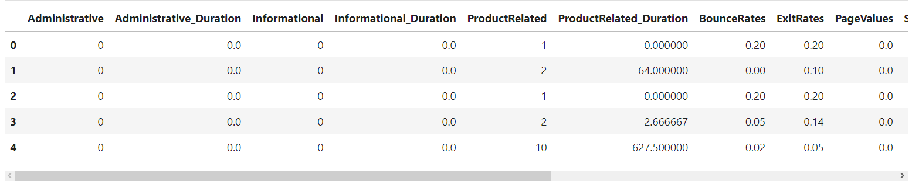
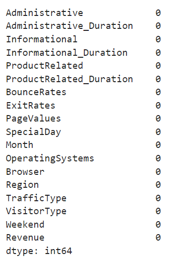
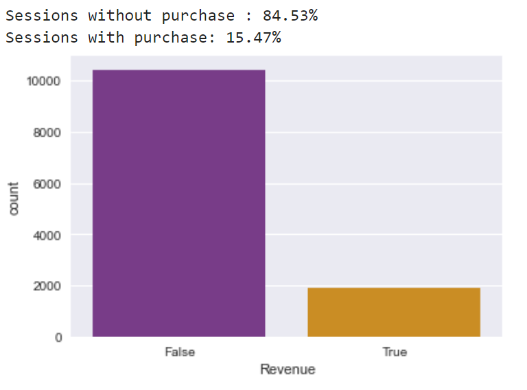

✍ Настало время попрактиковаться в оценке качества моделей.
На этот раз мы окунёмся в онлайн-маркетинг: будем пытаться предсказать совершение покупки пользователем во время его некоторого интернет-магазина.
Сессия на сайте — это временной интервал, в течение которого происходит взаимодействие пользователя с сайтом. Отсчёт сессии стартует сразу после перехода на сайт и завершается сразу после его закрытия или при отсутствии активных действий в течение некоторого периода времени.

Набор данных вы можете скачать по ссылке. С подробным описанием датасета ознакомьтесь в источнике.
Важное замечание. Мы не будем стремиться достичь наивысшего качества предсказания совершения покупки. Наша цель — отработать навыки работы с несбалансированными данными и применение методов валидации для оценки качества моделей.
А теперь приступим. Для начала импортируем необходимые библиотеки:
import numpy as np #для матричных вычислений
import pandas as pd #для анализа и предобработки данных
import matplotlib.pyplot as plt #для визуализации
import seaborn as sns #для визуализации
from sklearn import metrics #метрики
from sklearn import model_selection #методы разделения и валидации
from sklearn import ensemble #ансамбли
plt.style.use('seaborn-v0_8') #стиль отрисовки seaborn
%matplotlib inline
Прочитаем таблицу с данными и выведем её на экран, чтобы убедиться, что чтение прошло успешно.
shoppers_data = pd.read_csv('data/online_shoppers_intention.csv')
shoppers_data.head()

Посмотрим на размер таблицы:
print(shoppers_data.shape)
## (12330, 18)
В нашей таблице содержится информация о более чем 12 тысячах сессий на сайте интернет-магазина. Каждая сессия описывается 18 признаками.
Заранее удостоверимся в отсутствии пропусков:
shoppers_data.isna().sum()

Ни в одном из столбцов пропусков нет.
Теперь закодируем категориальные признаки с помощью простого горячего кодирования, используя уже знакомую нам функцию get_dummies():
dummy_data = pd.get_dummies(shoppers_data) dummy_data.head()

Теперь, когда необходимые преобразования выполнены, мы можем говорить о построении модели.
Итак, нам необходимо предсказать целевую переменную Revenue — признак покупки. Целевой признак является бинарным категориальным, то есть мы решаем задачу бинарной классификации. В первую очередь посмотрим на соотношение классов в данных:
sns.countplot(x='Revenue', data=dummy_data, palette='CMRmap')
class_percent = dummy_data['Revenue'].value_counts(normalize=True) * 100
print('Sessions without purchase : {:.2f}%'.format(class_percent[0]))
print('Sessions with purchase: {:.2f}%'.format(class_percent[1]))

Задание 6.1
Из 12330 сессий покупкой товара завершаются лишь 15.47 %. Мы знаем, что такое соотношение классов заставляет нас смотреть на метрики для каждого из классов отдельно.
Условимся, что лучшей будет считаться та модель, у которой значение метрики для пользователей, совершивших покупку, будет наибольшим.
По традиции разделим набор данных на матрицу наблюдений X и вектор ответов y:
X, y = dummy_data.drop('Revenue', axis=1), dummy_data['Revenue']
Давайте заранее определимся, как мы будем производить контроль качества наших моделей:
- Разделим выборку на тренировочную и тестовую.
- Будем проводить кросс-валидацию на тренировочной выборке (то есть будем делить её на тренировочные и валидационные фолды и считать среднее значение метрики по фолдам).
Итого мы будем использовать три показателя:
- значение метрики на тренировочных и валидационных фолдах кросс-валидации (по ним мы будем отслеживать переобучение модели и подбирать внешние параметры);
- значение метрики на отложенной тестовой выборке (оно будет нашим контрольным показателем).
Другими словами, мы будем сочетать hold-оut- и k-fold-подходы к валидации.